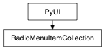

class counterpart of mel function radioMenuItemCollection
This command creates a radioMenuItemCollection. Attach radio menu items to radio menu item collection objects to get radio button behaviour. Radio menu item collections will be parented to the current menu if no parent is specified with the -p/parentflag. As children of the menu they will be deleted when the menu is deleted. Collections may also span more than one menu if the -g/globalflag is used. In this case the collection has no parent menu and must be explicitly deleted with the deleteUIcommand when it is no longer wanted.
Set the collection to have no parent menu. Global collections must be explicitly deleted.
Derived from mel command maya.cmds.radioMenuItemCollection
pymel.core.uitypes.RadioCollection
pymel.core.uitypes.RenderLayerButton
Enter search terms or a module, class or function name.